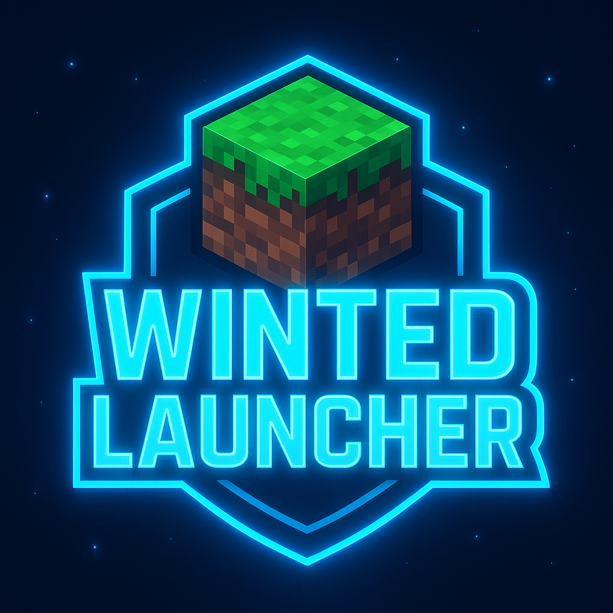

Mis Creaciones
Aquí puedes encontrar los proyectos de desarrollo en los que estoy trabajando.
Winted Studio
Descripción: Winted Studio es nuestro proyecto principal. Es un lugar donde creamos videojuegos de alta calidad y ofrecemos servicios profesionales de desarrollo.
Enfoque: Desarrollo de los mejores videojuegos y provisión de servicios de desarrollo.
Únete a Winted StudioZephyros Arcadia
Descripción: ¡Una comunidad y lugar donde cualquiera es bienvenido! Nuestro enfoque principal es crear un espacio acogedor y amigable para todos.
Enfoque: Comunidad, amistad y un espacio abierto para todos.
Únete a Zephyros ArcadiaWinted Launcher
Descripción: El mejor launcher de Minecraft. Winted Launcher te ofrece una experiencia de juego optimizada y segura. Accede rápidamente a tus versiones favoritas, gestiona tus mods con facilidad y disfruta de una interfaz moderna y fluida.
Enfoque: Optimización, seguridad y gestión de mods para jugadores de Minecraft.
Visitar la Web